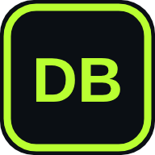

You're offline
DJ Battle can't reach the internet right now. Your music, practice log and drafts saved in this browser are safe.
Battles, rankings and the Beat Store need a connection, so they'll come back as soon as you do.

DJ Battle can't reach the internet right now. Your music, practice log and drafts saved in this browser are safe.
Battles, rankings and the Beat Store need a connection, so they'll come back as soon as you do.